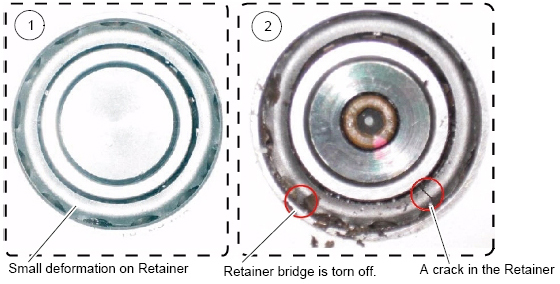
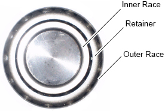
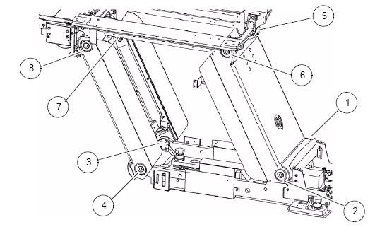
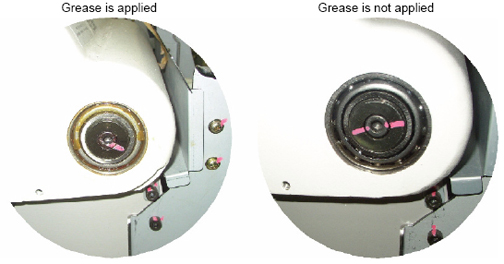
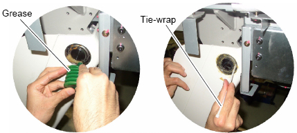
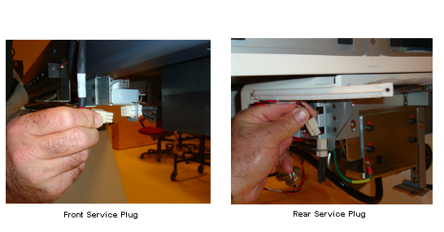
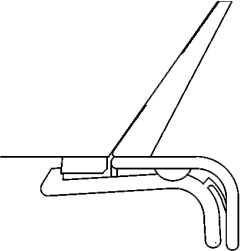
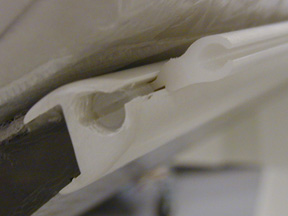

Operating Documentation
Direction 5193574-800, Rev# 22
LightSpeed 7.X Service Methods
Module Version 1.0, Version Date 10/28/08
Operating Documentation |
| Last Revised | 23 October 2008 |
Verify that you have turned off the 120 VAC power at the gantry service switch panel.
Remove the Flat Table Top (if your site has one) and remove the cradle. (For Flat Table Top procedures, refer to the manual that shipped with your option. For cradle removal procedures, see Cradle Replacement.)
Clean any hospital debris from the table pan. Be aware of sharp debris.
| NOTE: | Follow all EHS and PPE procedures to avoid bloodborne pathogens or other body fluids. |
Remove all of the table covers, except the footswitch cover and the front base cover. (For table cover removal, see Removal/Installation of Table Covers.)
Check to see if any of the anchor washers can be moved by hand.
If moveable, re-torque to 75 ± 6 N-m (55 ± 5 ft.-lbs.).
If re-torqued, add a new visual inspection mark with a permanent marker (or tamper-proof paint) by drawing a line across the nut, shaft and washer.
Inspect the table hydraulic elevation cylinder and fittings for leaks.
Inspect the table hydraulic oil tank and fittings for leaks.
Perform a visual inspection on both drive belts. Check for:
Cracks
Foreign material; remove if found.
Clean the roller.
To grease the table rails, follow Steps 5 - 8 of the procedure in Grease Table Rails.
Visually check the retainer of the bearing for damages and deformations (see Illustration 1 and Illustration 2).
Illustration 1: Damaged Retainer

Illustration 2: Normal Retainer

| NOTE: | CAUTION: Finger injury is possible with a burr on the leg bearing. Use caution to prevent possible finger injury from burred surface contact. |
Check that the eight (8) leg bearings on both sides of the table are packed with grease (see Illustration 3 and Illustration 4.)
Illustration 3: Table Leg Bearing Locations

Illustration 4: Table Leg Bearing

If the bearings have enough grease, you are finished with the Table Leg Bearing Verification.
If the bearings do not have enough grease:
Firmly pack the grease (Shell Alvania Grease #2) into the bearing (4~5cc) so that it is applied into the inner race of the bearing. Use a wooden stick or ty-wrap (see Illustration 5).
Illustration 5: Greasing Table Leg Bearing

Connect the front service plug and the two rear service plugs (see Illustration 6).
Illustration 6: Connecting Front and Rear Service Plugs

Power on the 120 VAC at the gantry service switch panel.
Move the table up and down several times to apply grease to the bearings.
Power off the 120 VAC at the gantry service switch panel.
Disconnect all of the service plugs.
Wipe off any excess grease.
Reinstall the table covers. (For procedures to reinstall the table covers, see Removal/Installation of Table Covers.)
Reinstall the cradle. (For procedures to reinstall the cradle, see Cradle Replacement.)
The Flat Table Top Mount is an option. Not all sites have this option. If your site does, reinstall the Flat Table Top removed earlier and complete this inspection. (for installation procedures, refer to the manual that shipped with your option.
The flat tabletop is mounted to the cradle using two attachment bolts in the back and with an attachment in the head holder slot.
Confirm that the two mounting bolts are tight.
Confirm that both bolts are tight.
Confirm that the front adapter is securely mounted in the table accessory slot
Restore 120 VAC power at the gantry service switch panel. During power up, confirm that the table power is restored and the table is operational.
Raise the table to ISO center.
Move the table fully into bore.
Confirm that all table covers fit tight and are not bent or broken.
Confirm that no covers are rubbing.
Confirm that the side covers fit snugly
Return the table to its original position.
The table head holders are mounted to the cradle using the accessory slot in the front end of the table (see Illustration 7.)
Illustration 7: Head Holder Latched

In the previous illustration, the head holder is latched correctly onto the first step of the plastic latch mechanism. (The head holder does not need to be latched onto the second step.)
Confirm that each of the head holders fit tightly and are not cracked or broken.
Confirm that the latch is not broken.
Confirm that the extender fits snugly and that the latch is not broken.
Confirm that the warning labels are present.
Confirm that the accessory rails are not damaged
Confirm that the screws are present and tight. (see Illustration 8).
Illustration 8: Accessory Rail Screw

Confirm that the phantom holder fits snugly and the latch is not broken.
Confirm that the QA phantom is filled and fits on the phantom holder.
| NOTE: | You may need a second person to perform these steps. |
There are a total of 10 tape switches on the GT table:
4 underneath the front of the IMS
2 on the rear of the IMS side covers
2 on the bottom of the IMS side covers
2 at the front of the IMS side covers
All of the switches, except the tape switch at the front of each of the two IMS covers, inhibit DOWN motion. The two switches at the front of the IMS covers inhibit UP motion.
While lowering the table using a gantry control, press one of the eight (8) table tape switches that inhibit DOWN motion and verify that down motion is inhibited.
Repeat step 1 with each of the seven (7) remaining tape switches.
While raising the table using a gantry control, press one of the two table tape switches at the front of the IMS covers and verify that the UP motion is inhibited.
There is a metal plate underneath the rear of the table. There are three limit switches behind this cover (one on each side and one in the center of the rear of the plate) that inhibit DOWN motion. While lowering the table using the gantry control, verify that each of the three limit switches inhibit DOWN motion.
On each side of the table, a few inches in front of the metal plate are metal actuator bars that contact limit switches that inhibit DOWN motion. Note that the actuator parts can pivot and that each end of the bars contacts a different limit switch. While lowering the table using the gantry controls, verify that pressing each end of the two actuator bars inhibits DOWN motion.
| NOTE: | You may need to re-position the IMS to access both ends of the actuator bars. |
Tilt the gantry to zero degrees if it is not already there.
Move the cradle (and IMS) to the home position.
Use the Table Down gantry push-button to lower the table to the minimum height.
Expected Result: The elevation display should read 585.0± 3 mm.
Raise the table to the maximum height using the gantry controls.
Expected Result: Elevation display should read 25.0 ± 3 mm.
| NOTE: | If the mechanical alignment of the table/gantry is not correct, these values may be out of range. Most of the following tests will still be valid. |
Move the cradle height to 145 mm.
Move the cradle in to 1000 mm.
Tilt the gantry to S30 and verify the table height can be adjusted from 145 mm to 25 mm.
Expected Result: The tilt display should read S30. The table lower limit should be 145 ± 3 mm. The upper table limit should be 25 ± 3 mm.
Move the cradle height to 63 mm.
Expected Result: The tilt display should read I30. The table lower limit should be 63 ± 3 mm. The upper table limit should be 25 ± 3 mm.
Use the home switch to return the gantry and table to the home position.